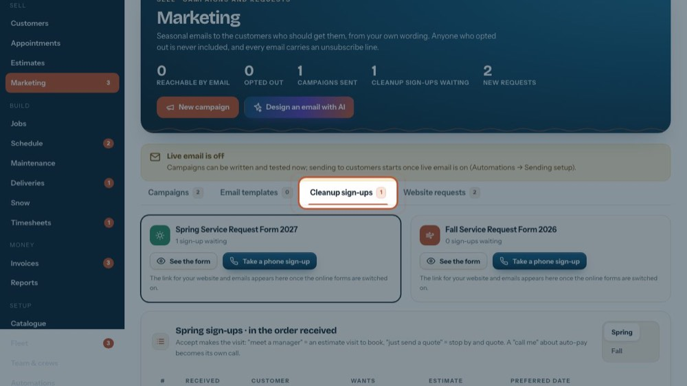
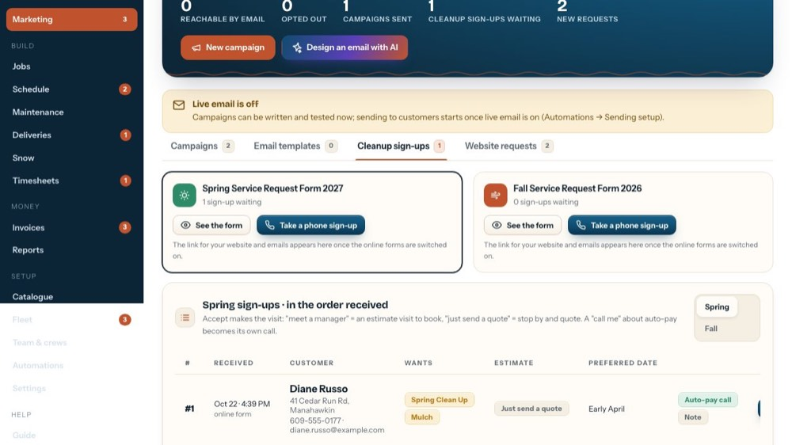
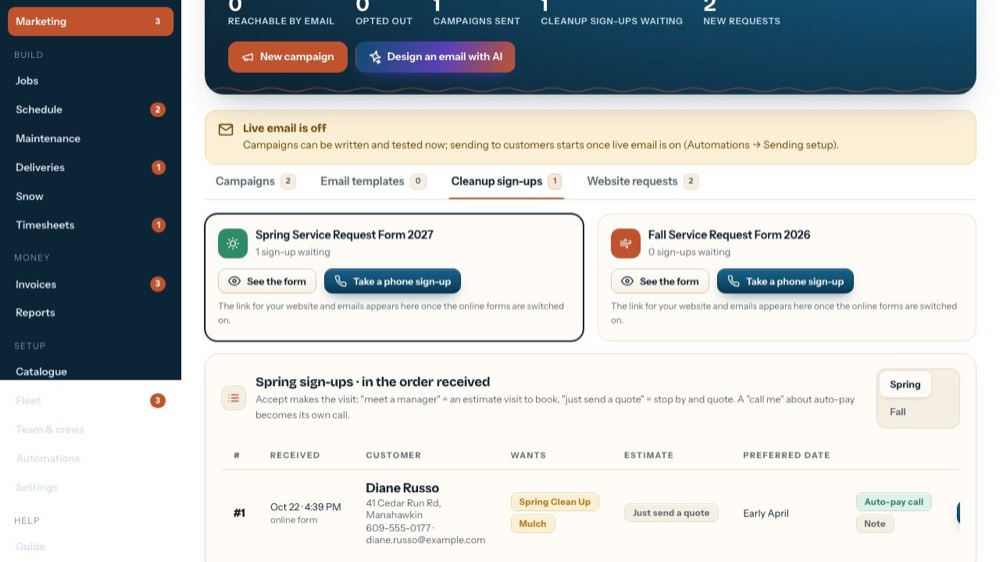
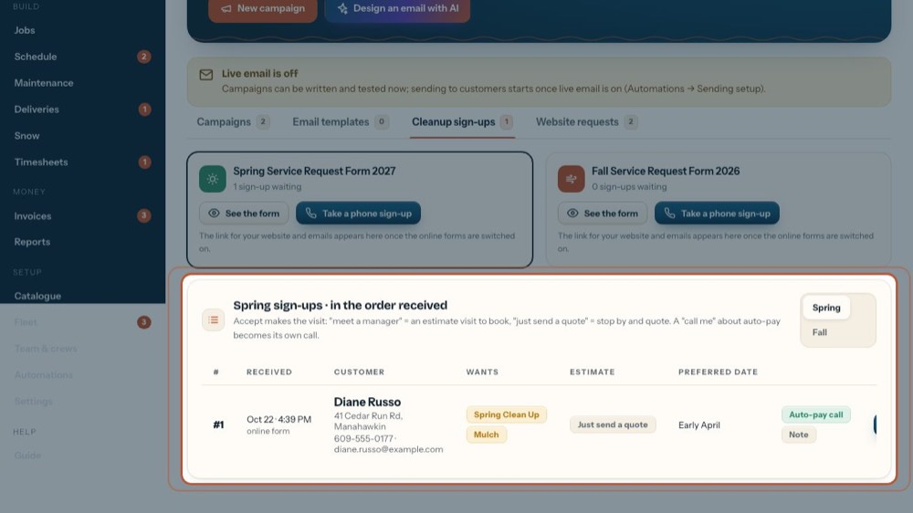

Spring / Fall cleanup sign-ups
In the office app, press Help and type spring / fall cleanup sign-ups
: the tour plays on your own screen, with your own data.
-

1Cleanup sign-ups
Your Spring and Fall forms and everyone who signed up.
-

2Your forms
See the form shows it exactly as customers see it.
-

3Someone calls instead
The same questions; they get their place in line.
-

4Work the list from #1
Accept books the visit or the stop-by quote; an auto-pay "call me" becomes a call for the office.